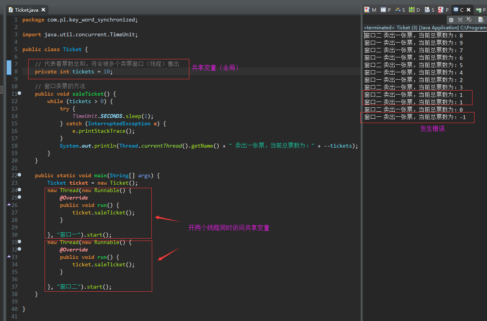
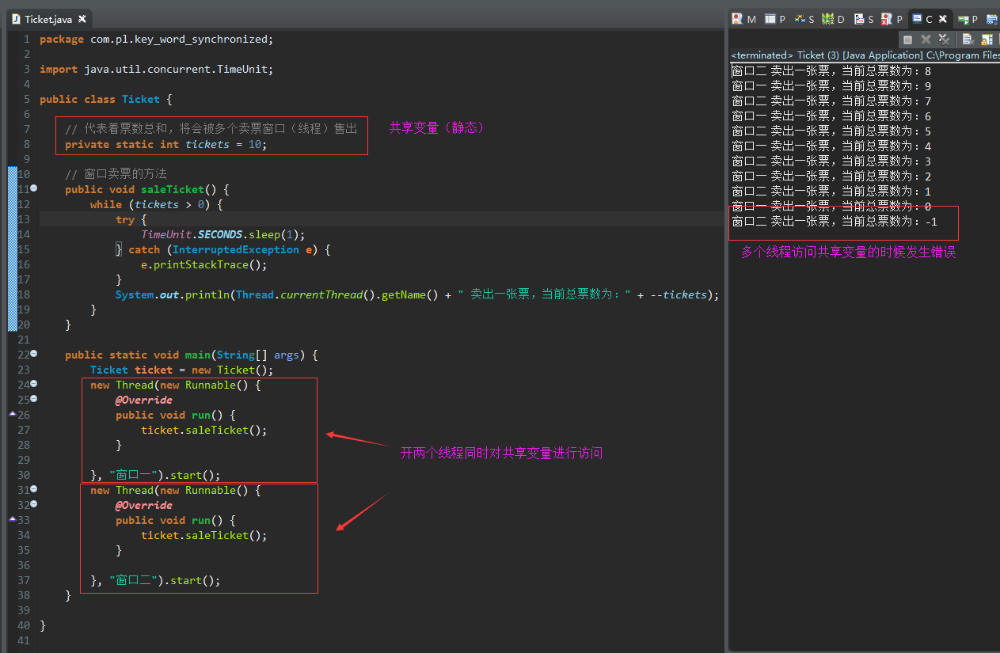
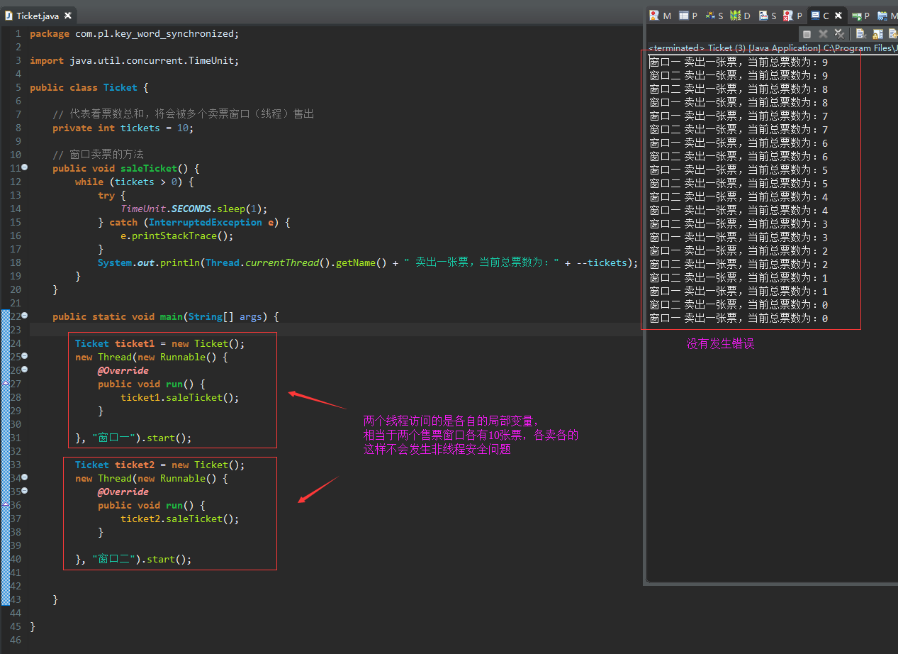

一、什么是线程安全问题
线程安全是多线程编程时的计算机程序代码中的一个概念。在拥有共享数据的多条线程并行执行的程序中，线程安全的代码会通过同步机制保证各个线程都可以正常且正确的执行，不会出现数据污染等意外情况。
二、什么是共享数据
共享数据就是会被多个线程同时访问的数据，共享数据一定是全局变量或者是静态变量，不可能是局部变量
二、访问共享数据（全局变量）的时候发生非线程安全问题

三、访问共享数据（静态变量）的时候发生非线程安全问题

四、访问局部变量是永远不可能发生非线程安全问题的
